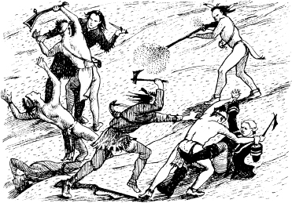
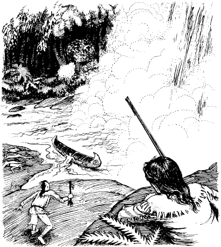
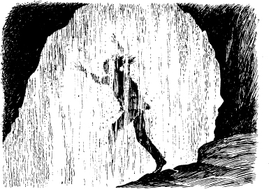
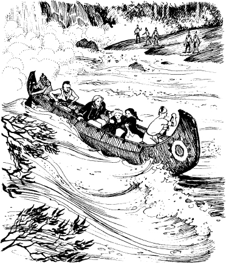

Sáng hôm sau, Hawk-eye đánh thức sớm Duncan.
‘Chúng ta phải đi thôi,’ anh ta nói. ‘Tôi sẽ lấy xuồng. Đánh thức cô Cora và cô Alice. Nhưng đừng gây ra tiếng động.’
Duncan đi đến phía sau hang động. ‘Cora. Alice,’ anh ta nói khẽ. ‘Thức dậy đi.’
Bất chợt, có tiếng reo hò và kêu khóc từ bên ngoài. Duncan chạy ra phía trước của hang động. Có tiếng súng nổ từ phía khu rừng. Có rất nhiều người da đỏ ở bờ bên kia sông.
‘Huron!’ Duncan thốt lên trong suy nghĩ.
Sau đó, Duncan nhìn thấy Hawk-eye. Người thám hiểm đang bắn từ phiến đá phẳng. Duncan thấy một tên Huron ngã vào dòng nước chảy xiết. Sau đó, những tên Huron khác chạy ngược vào rừng.
Hawk-eye quay trở lại hang động. ‘Chúng đã đi rồi,’ anh ta nói.
‘Chúng có quay lại không?’ Duncan hỏi.
‘Có, chúng sẽ quay lại,’ Hawk-eye trả lời. ‘Cô Cora và cô Alice phải ở lại đây trong hang. Chúng ta sẽ ra chỗ những phiến đá và đợi Huron.’
Duncan, Hawk-eye, Uncas và Chingachgook ngồi với khẩu súng. Họ ngồi sau một số phiến đá gần thác nước. Họ chờ đợi. Vài phút trôi qua. Sau đó là một giờ trôi qua.
Bất chợt, họ lại nghe thấy tiếng hò hét dữ dội của bọn Huron. Bốn tên da đỏ chạy băng qua phiến đá phẳng hướng về phía hang động. Chingachgook và Uncas nổ súng. Hai tên Huron đầu tiên ngã xuống đất. Tên Huron thứ ba nhảy lên người Hawk-eye. Mỗi người rút dao ra. Nhưng Hawk-eye khỏe hơn tên Huron. Anh ta giết chết tên Huron bằng dao.

Tên Huron thứ tư đánh nhau với Duncan. Uncas chạy đến giúp viên sĩ quan. Chàng trai trẻ Mohican giết chết tên Huron. Sau đó, Uncas và Duncan chạy trở lại chỗ các phiến đá.
Những tên Huron ở bờ bên kia sông bắt đầu bắn lại. Và Chingachgook bắn vào chúng.
Trận đấu súng cứ tiếp diễn. Đá và cây cối gần hang động bị phá hủy ở hàng trăm vị trí. Nhưng Hawk-eye và những người bạn không bị thương. Và Cora và Alice đang an toàn trong hang.
Hawk-eye nhìn thấy một tên Huron trên cây ở bờ bên kia sông. Người thám hiểm giơ khẩu súng dài lên và bắn. Có tiếng kêu và tên da đỏ rơi khỏi cây.
‘Tôi hết đạn rồi,’ Hawk-eye nói. ‘Uncas! Hãy ra xuồng. Có một số viên đạn trong xuồng.’
Uncas nhanh chóng chạy băng qua phiến đá phẳng. Nhưng quá muộn. Một tên Huron đang đẩy xuồng qua sông!

Duncan, Hawk-eye và hai người Mohican quay trở lại hang động.
‘Bây giờ chúng ta phải làm gì?’ Duncan hỏi.
Hawk-eye suy nghĩ trong vài phút. ‘Sẽ có lính canh trên đường đi,’ anh ta nói. Huron sẽ canh gác mọi con đường. Chúng ta phải bơi. Chúng ta phải nhảy xuống sông. Dòng nước chảy xiết sẽ đưa chúng ta vượt qua bọn Huron.’
Người thám hiểm nhìn Cora và Alice.
‘Chúng tôi không thể bơi được,’ Cora nói. ‘Alice và tôi sẽ ở lại đây. Hãy đến Fort William Henry gặp Tướng Munro. Tướng Munro phải cử quân lính đến.’
Chingachgook, Uncas và Hawk-eye nói chuyện nhẹ nhàng với nhau. Sau đó, Chingachgook chạy ra khỏi hang và nhảy xuống sông. Một lúc sau, Hawk-eye đặt khẩu súng dài xuống và đuổi theo Chingachgook. Dòng nước chảy xiết cuốn họ đi.

Cora nhìn Uncas. ‘Đi với họ đi,’ cô nói.
‘Tôi sẽ ở lại,’ chàng trai trẻ Mohican nói.
‘Không!’ Cora nói. ‘Xin anh, Uncas. Hãy đi với họ!’
Uncas không vui. Nhưng anh cũng nhảy xuống nước.
Cora nhìn Duncan.
‘Tôi sẽ ở lại,’ Duncan nói. Anh ta nhìn Alice. ‘Tôi không thể rời xa em.’
Có tiếng reo hò và kêu khóc của bọn Huron trên phiến đá phẳng. Duncan nhìn ra khỏi hang.
Bọn Huron đang tìm kiếm đằng sau những phiến đá gần thác nước.
‘Chúng đang tìm chúng ta,’ Duncan thốt lên trong suy nghĩ. Anh nhanh chóng quay trở lại hang động.
‘Bạn của chúng ta sẽ sớm quay lại với sự trợ giúp,’ anh nói với Cora và Alice.
Cora sợ hãi. Mặt cô tái nhợt. Cô hét lên.
Duncan quay lại - và anh nhìn thấy khuôn mặt khủng khiếp của Magua!
‘Những người Mohican đâu rồi?’ Magua hỏi. ‘Người thám hiểm, Hawk-eye - Súng dài đâu rồi?’
Bất chợt, hang động tràn ngập bọn Huron. Một tên nhặt khẩu súng của Hawk-eye.
‘Họ đã đi rồi,’ Duncan nói. ‘Họ sẽ sớm quay lại với sự trợ giúp.’
Bọn Huron tức giận. Chúng định giết những tù nhân. Nhưng Magua nói chuyện với chúng, nhanh chóng và nhẹ nhàng. Sau đó, bọn Huron đưa Duncan, Cora và Alice ra phiến đá phẳng. Một trong những tên Huron mang đến một chiếc xuồng.
‘Lên xuồng!’ Magua nói.
Duncan và các chị lên xuồng. Magua và bọn Huron đưa họ qua sông.

Những tù nhân xuống xuồng ở bờ bên kia sông. Magua và năm tên Huron ở lại với họ. Bọn Huron khác đi vào rừng.